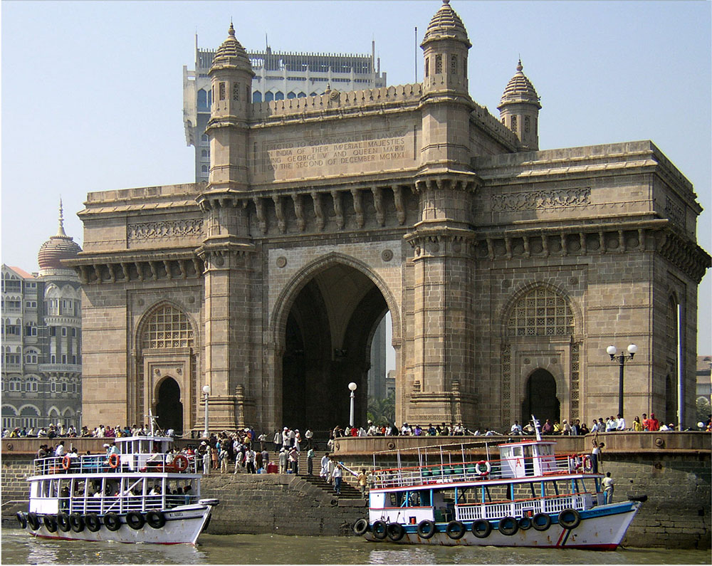
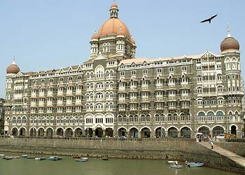
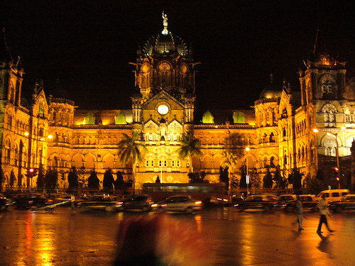
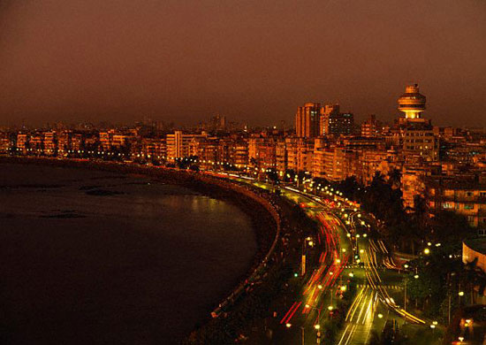

Mumbai(Central Part)The business capital of India
|  |
Mumbai formerly knows as Bombay is the blend of Gothic, Victorian and colonial era. We can see the mix of it everywhere. Most popular tourist attractions of Mumbai are
Gateway of India. This is the first site for every traveler. Built during the British rule. It is the place where the viceroys and governors used to land upon their arrival in India. Though built as a welcome to King George V during his visit of 1911, then an event of grand significance for British India and the British empire, today serves as a "monumental memento" of colonialist and subjugation by the British over the people of India.
|  |
The Taj Hotel. this hotel is considered the flagship property of the group and contains 560 rooms and 44 suites. There are some 1,500 staff including 35 butlers. From a historical and architectural point of view, the two buildings that make up the hotel, the Taj Mahal Palace and the Tower are two distinct buildings, built at different times and in different architectural designs.
The hotel, which many claim offers the highest level of service in India, has hosted many notable guests, from presidents to captains of industry and stars of show business
|  |
Chatrapati Shivaji Terminal.(Main Train Station) formerly Victoria Terminus (VT), is a UNESCO World Heritage Site and an historic railway station in Mumbai, India which serves as the headquarters of the Central Railways. Designed by Frederick William Stevens with influences from Victorian Italianate Gothic Revival architecture and traditional Mughal buildings, the station was built in 1887 in Bombay to commemorate the Golden Jubilee of Queen Victori
|  |
Marine Drive. Marine Drive is possibly Mumbai's best known road. Its feature is a seaside panoramic view where people flock to catch the evening breeze.